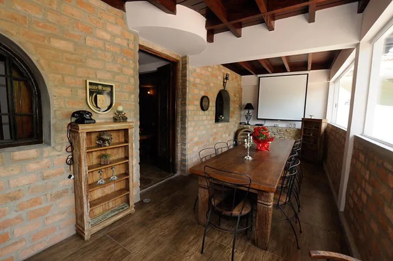

MINHA CIDADE GUARULHOS
RESTAURANTES
Considerado como o melhor restaurante de Guarulhos pelo Trip Advisor, o Vino Vinho é uma grata surpresa! O ambiente é hiper agradável, o atendimento perfeito e os pratos…. hummmm… sem palavras! Quando começou, o Vino Vinho era apenas uma loja para apreciadores de vinho. Aos poucos foi inserindo artigos gourmets e foi virando restaurante… graças a Deus!!!
Recomendamos fortemente!!!
Endereço: R. Cônego Valadão, 940 – Vila Gopouva, Guarulhos – SP
Telefone: (11) 4372-8068
Ahhh o Nonnetto! Somos apaixonados por este lugar. É bonito, é romântico e os pratos suculentos! O restaurante, localizado próximo ao bosque Maia, é uma das melhores opções para um jantar romântico ou um belo encontro de família. Sempre que vamos a este lugar, temos a tradição de pedir o nhoque ao molho sugo. É o melhor do mundo!
Endereço: R. Josephina Mandotti, 274 – Jardim Maia, Guarulhos – SP
Telefone: (11) 2440-0676
Este sem dúvida é o restaurante mais bonito de Guarulhos. O espaço grande e imponente, no centro de Guarulhos, também não faz feio no sabor e preparação dos pratos. Frequentamos este restaurante a bastante tempo e sempre nos surpreendemos quando voltamos. Todos os pratos são incríveis, mas aqui você encontrará a melhor pizza de Guarulhos.
Endereço: R. Lázaro Bueno Oliveira, 92 – Centro, Guarulhos – SP
Telefone: (11) 2441-3231
Mandacaru Restaurante e Cachaçaria
Está procurando por gastronomia nordestina de qualidade em Guarulhos? Aqui é o lugar! Este restaurante / cachaçaria é maravilhoso! Adoramos a diversidade de sucos. Comemos um dadinho de tapioca com linguiça que mudou a nossa vida! Para quem gosta de cachaça, o restaurante é um prato cheio e conta com uma carta de cachaças bastante ampla.
Endereço: Av. Salgado Filho, 1798 – Cidade Maia, Guarulhos – SP
Telefone: (11) 2806-9282
Sem dúvida um dos restaurantes mais tradicionais de Guarulhos.
A Cantina serve uma das melhores massas que já provamos. O atendimento é extremamente gentil e o preço justo. A lasanha é de cair o queixo.
Endereço: Av. Dr. Timóteo Penteado, 3757 – Vila Galvao, Guarulhos – SP
Telefone: (11) 2451-5466
O Jun é o “japa” sensação de Guarulhos. É unanimidade! O rodízio é bem completo e os pratos saborosos. O restaurante é bastante tradicional e em algumas mesas você precisa tirar o sapato e sentar no chão, o que proporciona uma verdadeira experiência japonesa. Somos apaixonados por este rodízio!
Endereço: Av. Paulo Faccini, 1909 – Cidade Maia, Guarulhos – SP
Telefone: (11) 2229-6514
O Base Bistrô fica dentro do hotel Pullman, perto do aeroporto de Guarulhos. O restaurante é especializado em gastronomia internacional. Tudo nesse lugar é maravilhoso! Os pratos, o ambiente e por ser dentro de hotel, sempre da aquela sensação de que estamos viajando! Rssss
Tudo é perfeito, mas o grande diferencial deste restaurante fica por conta do atendimento. Sempre que vamos nos sentimos especiais!
Endereço: Rodovia Hélio Smidt, s/n – Acesso Base Aérea Cumbica – Hotel Pullman, Guarulhos – SP
Telefone: (11) 2124-5800
O Macaxeira é um pedacinho do Nordeste em Guarulhos!
O restaurante fica super bem localizado e a noite fica lindo, com as luzes acesas. Amamos este lugar! Nosso prato predileto é o baião de dois, onde um prato serve duas pessoas.
Endereço: R. Diogo Farias, 307 – Centro, Guarulhos – SP
Telefone: (11) 2229-6982
Botticelli Vinhos e Restaurante

Pensa em um lugar charmoso… Esse lugar é o Botticelli! O restaurante é uma ótima pedida para quem procura um lugar com uma pegada mais “romântica”. A carta de
vinhos é fantástica. Sempre que vamos passear no Lago dos Patos, damos uma passada por lá!
Endereço: R. Santo Antônio, 968 – Vila Galvao, Guarulhos – SP
Telefone: (11) 2656-1718
© 2023 Cidade de Guarulhos. Todos os direitos reservados.